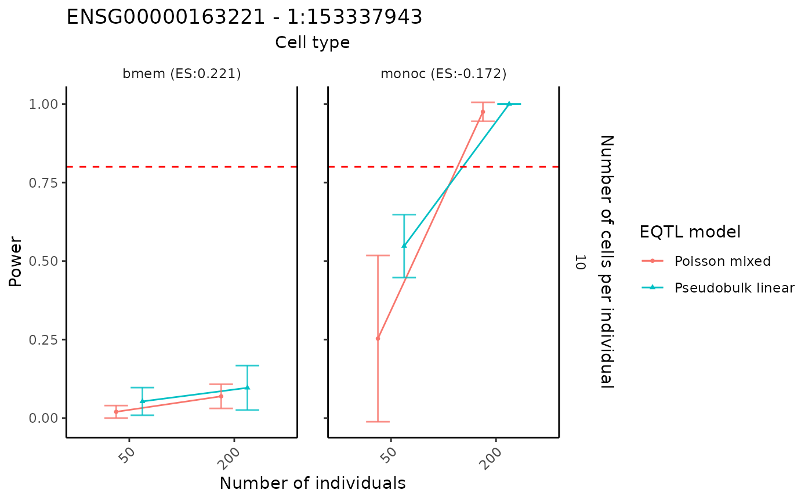

Power analysis based on a fitted scDesignPop marginal model
Chris Dong
Department of Statistics and Data Science, University of California, Los Angelescycd@g.ucla.edu
Yihui Cen
Department of Computational Medicine, University of California, Los Angelesyihuicen@g.ucla.edu
2 May 2025
Source:vignettes/scDesignPop-power-analysis-fitted.Rmd
scDesignPop-power-analysis-fitted.RmdStep 1: running power analysis
Given fitted marginal model, scDesignPop can perform simulation-based
power analysis for a specific gene-SNP pair across cell types using the
runPowerAnalysis function. Here, we choose the negative
binomial mixed model using "nb" option.
library(scDesignPop)
library(SingleCellExperiment)
load("/home/ycen/proj/scEQTLsim/data/tutorials/marginal_list_sel.rda")
set.seed(123)
power_data <- runPowerAnalysis(marginal_list = marginal_list_sel,
marginal_model = "nb",
geneid = "ENSG00000163221",
snpid = "1:153337943",
type_specific = "cell_type",
type_vector = c("bmem", "monoc"),
methods = c("poisson","pseudoBulkLinear"),
nindivs = c(50, 200),
ncells = c(10),
alpha = 0.05,
power_nsim = 50,
snp_number = 10,
gene_number = 200,
CI_nsim = 1000,
CI_conf = 0.05,
ncores = 50L)
#> [1] -4.564454
#> [1] 0.2210074
#> [1] 1.855003
#> [1] -0.1721982
#> [1] -4.564454
#> [1] 0.2210074
#> [1] 1.855003
#> [1] -0.1721982Step 2: visualizing power results
The power analysis results can be visualized using the
visualizePowerResult function.
visualizePowerResult(power_result = power_data,
celltypes = c("bmem", "monoc"),
x_axis = "nindiv",
y_axis = "ncell",
col_group = "method",
geneid = "ENSG00000163221",
snpid = "1:153337943")